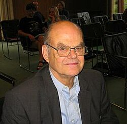

John Thompson | |
|---|---|
 Thompson in 2007 | |
| Born | John Griggs Thompson October 13, 1932 Ottawa, Kansas, U.S. |
| Education | Yale University (BA) University of Chicago (MA, PhD) |
| Awards | Cole Prize (1965) Fields Medal (1970) Fellow of the Royal Society (1979) Senior Berwick Prize (1982) Sylvester Medal (1985) Wolf Prize (1992) Poincaré Medal (1992)[1][2] National Medal of Science (2000) Abel Prize (2008) De Morgan Medal (2013) |
| Scientific career | |
| Fields | Group theory |
| Institutions | Harvard University (1961–62) University of Chicago (1962–68) University of Cambridge (1968–93) University of Florida (1993–) |
| Thesis | A Proof that a Finite Group with a Fixed-Point-Free Automorphism of Prime Order is Nilpotent (1959) |
| Saunders Mac Lane | |
Doctoral students | R. L. Griess Richard Lyons Charles Sims Nick Patterson David Goldschmidt |
John Griggs Thompson (born October 13, 1932) is an American mathematician at the University of Florida noted for his work in the field of finite groups. He was awarded the Fields Medal in 1970, the Wolf Prize in 1992, and the Abel Prize in 2008.
Thompson received his Bachelor of Arts from Yale University in 1955 and his doctorate from the University of Chicago in 1959 under the supervision of Saunders Mac Lane. After spending some time on the mathematics faculty at the University of Chicago, he moved to the UK, in 1970, to take up the Rouse Ball Professorship in Mathematics at the University of Cambridge and later moved to the Mathematics Department of the University of Florida as a Graduate Research Professor. He is currently a professor emeritus of pure mathematics at the University of Cambridge, and a professor of mathematics at the University of Florida. He received the Abel Prize in 2008 together with Jacques Tits.[3]
Thompson's doctoral thesis introduced new techniques and included the solution of a problem in finite group theory which had stood for around sixty years: the nilpotency of Frobenius kernels. At the time, this achievement was noted in The New York Times.[4]
Thompson became a figure in the progress toward the classification of finite simple groups. In 1963, he and Walter Feit proved that all nonabelian finite simple groups are of even order (the Odd Order Paper, filling a whole issue of the Pacific Journal of Mathematics). This work was recognised by the award of the 1965 Cole Prize in Algebra of the American Mathematical Society. His N-group papers classified all finite simple groups for which the normalizer of every non-identity solvable subgroup is solvable. This included, as a by-product, the classification of all minimal finite simple groups (simple groups for which every proper subgroup is solvable). This work had some influence on later developments in the classification of finite simple groups, and was quoted in the citation by Richard Brauer for the award of Thompson's Fields Medal in 1970 (Proceedings of the International Congress of Mathematicians, Nice, France, 1970).
The Thompson group Th is one of the 26 sporadic finite simple groups. Thompson also made major contributions to the inverse Galois problem. He found a criterion for a finite group to be a Galois group, that in particular implies that the monster simple group is a Galois group.[5]
In 1971, Thompson was elected to the United States National Academy of Sciences. In 1982, he was awarded the Senior Berwick Prize of the London Mathematical Society, and, in 1988, he received the honorary degree of Doctor of Science from the University of Oxford. In 1992 he was awarded the Wolf Prize in Mathematics. Thompson was awarded the United States National Medal of Science in 2000.[6] He is a Fellow of the Royal Society and a recipient of its Sylvester Medal in 1985.[7] He is a member of the Norwegian Academy of Science and Letters.[8]
{kind=link}